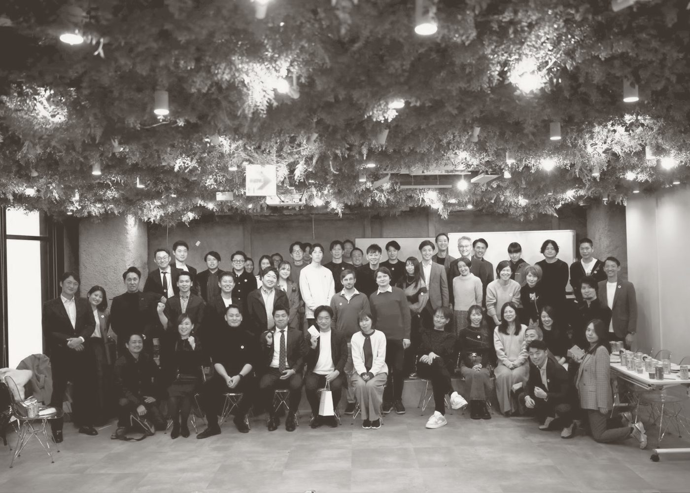
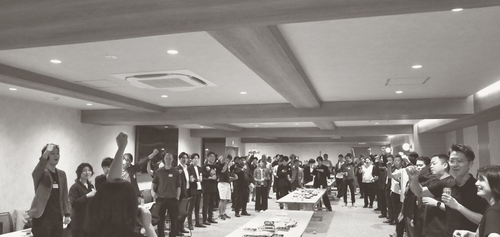
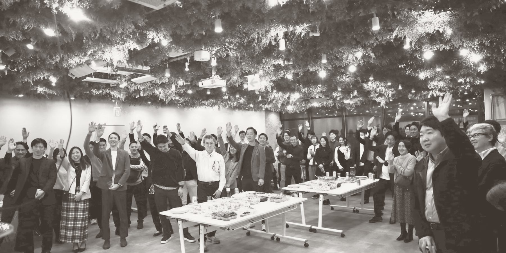

スタートアップ向け無料
顧客理解から、仮説設計、現場検証、勝ち筋の構築まで。 CHOUJINの「事業実装6ステップ」に沿って現在地を整理し、事業を止めている最大のボトルネックと、次の30日で取るべきアクションをA4一枚にまとめます。

診断のあと、手元に残るのはこの一枚です。長い報告書は作りません。
VC・CVCからのご紹介で申し込まれた場合は、同じA4一枚をご紹介元にもお送りします。話し始める前に必ずお伝えします。書くのは「現在地・詰まり・次の30日」だけで、点数はつけません。評価ではなく、現在地の共有として書きます。
ご自身で申し込まれた場合は、ご本人以外にはお渡ししません。
事業が進まない原因は、営業とは限りません。顧客の絞り方、仮説の立て方、検証の順番——止まっている場所は会社ごとに違います。だから最初に「どこで止まっているか」だけを見ます。
CHOUJINが自分たちの事業開発で使っている型です。診断では、伺った内容をこの6つのどこにいるかに置き直します。
止まる場所は、ほとんどが2段目か3段目です。1段目を飛ばしたまま作り込んだ結果、そうなります。

社名は伏せています。いずれも、自分たちで電話をかけ、商談に出て、顧客をつくる側で入った案件です。
正直に書きます。私たちが欲しいのはデータです。
ディープテックの事業開発が、どの局面で、どういう理由で止まるのか。これを一社ずつ聞いて溜めていくと、業界横断の傾向が見えてきます。その傾向こそが私たちの資産になるので、この45分は無料で構いません。
ですので、この診断から営業提案はしません。実行まで手伝ってほしいと感じられた場合だけ、あらためてご相談ください。
合同会社CHOUJIN。事業開発が本業の会社です。コンサルティングではなく、自分たちで電話をかけ、商談に出て、顧客をつくる側にいます。ディープテック領域では宇宙・半導体・医療機器などの案件で、大手メーカーの現場に入って顧客開拓そのものを担ってきました。
診断を担当するのは代表の嘉山洋輔、または事業開発を本業とするメンバーです。研究者出身の経営者の方に営業の話をするのは気が引ける、という声をよく伺います。ですが顧客に会う作業は、技術と同じで、型と回数の問題です。センスの話ではありません。
普段どんな仕事をしているのか、どんな人が集まっているのかは、会社のサイトに載せています。
CHOUJINのサイトを見る
出資先にご紹介ください。紹介文はいりません。このページのURLを転送するだけで始まります。
転送用の文面（そのままお使いください）
事業開発の現在地を45分で診断してくれる無料のサービスがあります。営業はされないので、一度受けてみてください。
https://shindan.choujin.net/
無料です。あとから請求することも、診断を入口に営業提案をすることもありません。私たちが欲しいのは、事業開発がどこで止まるかのデータです。
合同会社CHOUJIN代表の嘉山洋輔、または事業開発を本業とするメンバーが対応します。いずれも自分で電話をかけ、商談に出て、顧客をつくってきた側の人間です。
プロダクトや技術があり、顧客開拓を始めている、または始めようとしているスタートアップが対象です。分野は問いません。大企業の新規事業部門からのご相談も受けています。
資料を新しく作る必要はありません。申込フォームで「事業を一言で」「直近3ヶ月の数字」「いま一番止まっていること」の3つを書いていただければ十分です。既存の事業資料があればURLを添えてください（任意）。
VC・CVCからのご紹介で申し込まれた場合は、同じA4一枚をご紹介元にもお送りします。話し始める前に必ずお伝えします。書くのは「現在地・詰まり・次の30日」だけで、点数はつけません。ご自身で申し込まれた場合は、ご本人以外にはお渡ししません。
伺った内容は、ご本人（ご紹介の場合はご紹介元を含む）以外には出しません。業界横断の傾向として使う場合も、社名や個社が特定できる形にはしません。NDAの締結をご希望の場合は対応します。
もちろんです。診断だけで終わる方がほとんどです。A4一枚をお送りした時点で完了とし、その後こちらから連絡することはありません。
ご希望がある場合は、顧客ヒアリング、仮説検証、顧客開拓などの実行支援も可能です。無料診断後に、こちらから営業提案を行うことはありません。
受け入れは週2社までとさせていただいています。お申し込みが重なった場合は、順番に日程をご案内します。

オンライン45分。営業提案は行いません。
1〜2営業日以内に、日程候補をお送りします。